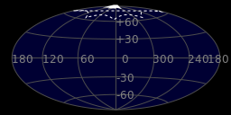
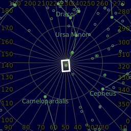
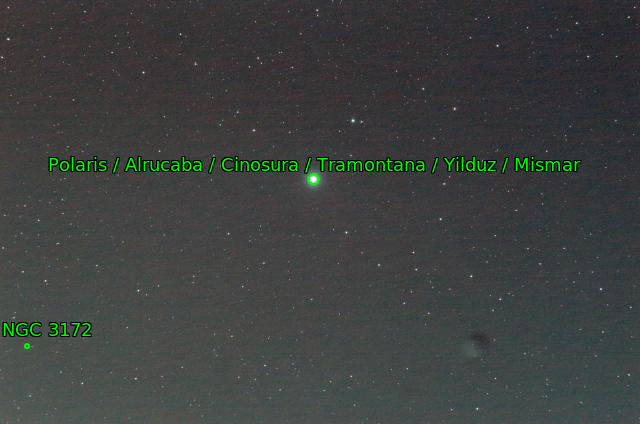

- The star Polaris
- Alrucaba
- Cinosura
- Tramontana
- Yilduz
- Mismar (α UMi) (1 UMi)

| Designations | α Ursae Minoris |
| Wikipedia | Polaris |
| Location | Living Room Balcony |
| Coordinates | 97° 52' 02'' W 30° 12' 12''N |
| Elevation | 840 ft (256 m) |
| Date | Oct 31, 2024 |
| Time | 7:47 PM to 11:57 PM |
| Moon Illumination | 0% |
| Frames | One Shot Color (550 x 10sec) |
| Integration | 91min 40sec |
| ISO | 1600 |
| Celestial hemisphere | |
| Constellation | Ursa Minor |
| RA center | 03h 18m 47.667s |
| DEC center | +89° 14' 18.017" |
| Feild radius | 1.782 deg |
| Pixel Scale | 3.94 arcsec/pixel |
| Orientation¹ | Up is 80.8 degrees E of N |
| Size | 2.97 x 1.97 deg |
¹May be incorrect (astronomy.net)


| Imaging Telescopes Or Lenses | SvBony SV503 80ED |
| Imaging Camera | Sony A58 |
| Guiding Telescopes Or Lenses | -- |
| Guiding Camera | -- |
| Mount | Skywatcher EQM-35 PRO |
| Filters | SvBONY CLS 2in |
| Accesories |
JJC Intervelometer, Anker Power |
| Software |
processing-001: SiriL |
| Main | The star Polaris |
| Contains |
|
| Skybox | http://legacysurvey.org/viewer/?ra=49.6986&dec=89.2383&layer=unwise-neo6&poly=277.4161,88.8240,22.9592,87.5720,70.3074,87.5269,170.2662,88.7317,277.4161,88.8240 |
| Annotated Image² |  |
| Stars² | |
²astronomy.net